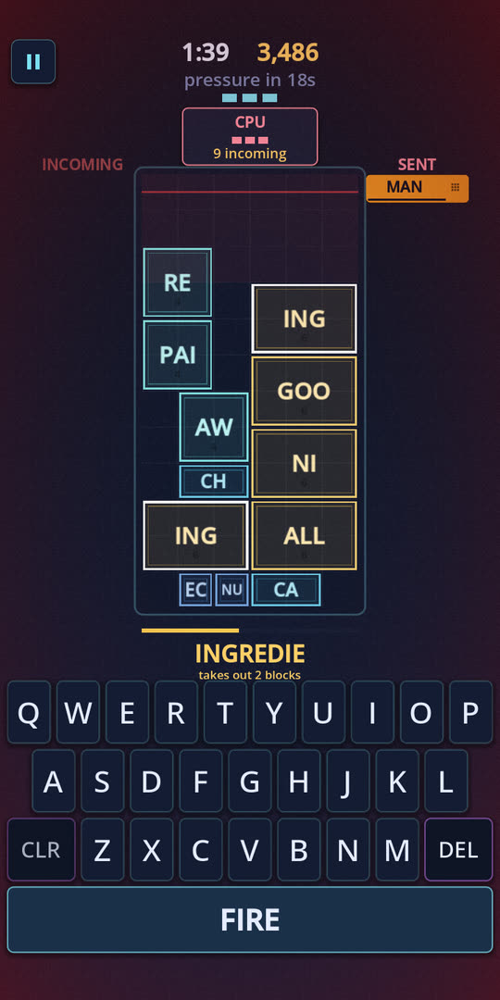

Word games that
fight back.
I build games where typing is the mechanic rather than the interface — where the word you just played is the problem somebody else has to solve.
The idea, in three moves
- YOU PLAY FRIENDSHIP SHIP
- THEY ANSWER SHIPMENTS MENT
- YOU ANSWER MENTIONING ING
The last letters of your word are stamped onto a block on their board. They can only clear it with a word that starts with those letters — and that word’s ending comes straight back at you.
Out now
Word Wars: Typing Battle
A real-time word battler for iPhone and iPad. Play the CPU any time, or another player over the network. How hard you hit comes from rhythm and length together: keep your chain alive between words, and reach for the longer answer when you can see one.
Fill your board and it costs one of three lives rather than the match — but the pressure never resets, so the third life is played under conditions the first never saw.
- Free · iPhone & iPad · iOS 17+
- Version 1.4.0 · also on Windows and Linux
Featured

